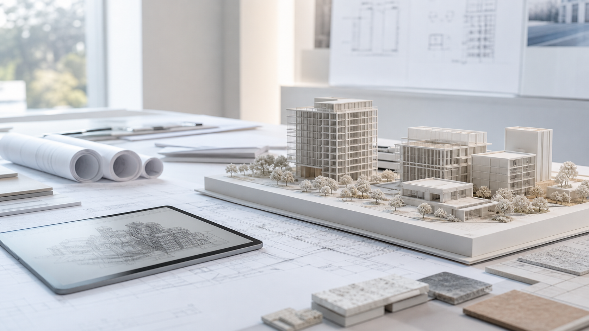

Wuhu Jiuyuan Architectural Design Co., Ltd.
Architecture Design and Intelligent Systems Consulting
We support public buildings, office and commercial programs, residential amenities, interiors and intelligent systems with disciplined drawings, clear coordination and practical responses to site conditions.
01
Core Services
From early-stage judgment to site coordination, the studio organizes design work across architecture, interiors, intelligent systems and digital service portals.
Architecture Design
Concept and construction drawing support for public buildings, office and commercial spaces, residential amenities, education facilities and community services.
Technical Consulting
Feasibility review, design briefs, discipline coordination, drawing optimization and technical consulting during project implementation.
EPC Coordination
Design planning, drawing briefings and construction coordination for engineering contracting work within the permitted qualification scope.
Interior Design
Interior space, circulation and material strategy consulting for office, commercial, education-supporting and public environments.
Intelligent Systems
Design coordination around low-voltage systems, information infrastructure, operations management and digital handover requirements.
AI Enterprise Portal
A maintainable online entry point that connects service structure, project information, client needs and a growing knowledge base.
02
Project Focus
Responding to Wuhu's local construction demand, Jiuyuan organizes its work around public buildings, office and commercial programs, residential amenities, interiors and intelligent systems.
Public Buildings and Education Facilities
Schools, kindergartens, community public services, cultural facilities and civic support spaces.
Office, Commercial and Mixed-use
Spatial efficiency, circulation, facade identity, fire protection and MEP coordination.
Residential Amenities and Community Renewal
Residential support facilities, community services, facade renewal and existing-space upgrades.
Interior and Intelligent Systems
Interior fit-out, low-voltage systems, information rooms, security systems and smart operations interfaces.
03
Selected Projects and Service Records
A concise record of media-recognized project participation, industrial design services and local professional service listings across MEP coordination, drawings, interiors and intelligent systems.
01
2017 / Xuancheng Jixi / MEP Design
Jixi Christian Church
The project was recognized by international architecture media. Jiuyuan participated in MEP design coordination for the approximately 2,700 sq m public religious building.
02
2022 / Industrial Park / Scheme + Construction Drawings
Fumei Intelligent Home Appliance Supporting Industrial Park, Phase I
Design services for the first-phase industrial park, covering scheme design and construction drawing support for implementation of industrial support spaces.
Wuhu Architectural Design Service Roster
Service listing record for building engineering design, supporting public, office, commercial and mixed-use consulting.
Wuhu Architectural Design Service Roster
Service listing record for interior engineering design, covering interior space, materials and fit-out coordination.
Wuhu Architectural Design Service Roster
Service listing record for intelligent systems engineering design, connecting low-voltage, security, information and operations interfaces.
04
AI Portal Capabilities
The enterprise portal is both a public website and an operational entry point for document lists, project needs, common questions and inquiry records, making first contact clearer for every project.
- Structured presentation of services and project focus
- Client inquiry forms and lead routing
- Common document checklists and start-up guidance
- Expandable knowledge base, case library and inquiry ledger
Project Start-up Guidance
Select a project type to generate an initial document checklist.
Suggested Preparation
- Project site or existing-building information
- Design brief and functional requirements
- Target schedule, investment boundary and approval requirements
05
Rooted in Wuhu, the studio responds to each project site with clear drawings, professional coordination and reliable delivery.
Wuhu Jiuyuan Architectural Design Co., Ltd. was established in 2001. Its business scope includes architecture design, architectural technical consulting services and construction engineering contracting coordination. The company supports project owners, construction entities and public institutions with steady, pragmatic design consulting.
The company was founded and entered the field of architecture design and technical consulting.
Service coordination expanded across building engineering, interior works and intelligent systems design.
The AI-enabled enterprise portal formed a maintainable online entry point for service communication.
06
Contact and Project Inquiry
- Phone
- 0553-5863112
- Registered Address
- 3F, Building 6, Xiangyuan Electronic Commercial Street, Wuhu, Anhui, China
- Service Scope
- Architecture design, technical consulting and construction engineering coordination